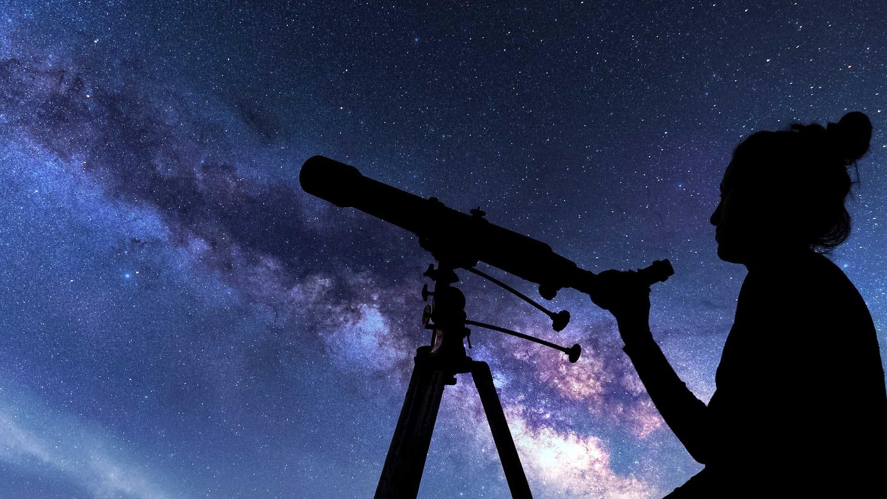

Launch Your Future as an Astronomer
Explore galaxies, study stars, and unlock the secrets of space!
Pathway Snapshot
High School Courses | College Majors | Career Roles |
Algebra & Geometry | Astronomy | Astronomer |
Pre-Calculus / Calculus | Astrophysics | Astrophysicist |
Physics | Physics | Research Scientist |
Computer Science | Data Science | Observatory Scientist |
Chemistry | Mathematics | Planetary Scientist |
Earth & Space Science | Aerospace-related fields | Space Science Educator |
Women Who Lead the Way
Katie Mack
Hawking Chair in Cosmology and Science Communication, Perimeter Institute for Theoretical Physics

Photo Credit: Perimeter Institute / Wikimedia Commons
“The universe is wild and beautiful, and studying it reminds us how connected we all are to something much bigger.”
Dr. Katherine (Katie) Mack is a theoretical astrophysicist and noted science communicator whose research explores the origins and ultimate fate of the universe. She is widely recognized for her engaging explanations of cosmology and efforts to make complex astrophysics accessible to the public.
Day in the Life
Daily Tasks | Tools & Technologies Used |
Analyzing telescope and satellite data | Python, MATLAB |
Studying stars, galaxies, or planets | Space telescopes (Hubble, James Webb) |
Writing research papers | Data visualization software |
Collaborating with scientists worldwide | Supercomputers |
Teaching or presenting discoveries | Simulation & modeling tools |
Mini-Activity: Try This!
Build Your Own Star Map
- Go outside at night or use a free app like Stellarium
- Identify 3 constellations
- Research one star and write a “space fact card” about it
✨ You’re thinking like an astronomer—observing, questioning, and discovering!
Careers & Resources
Degree Program Finder:
- Search “Astronomy” or “Astrophysics” programs at universities
Scholarships:
- NASA Scholarships
- Society of Women Engineers (SWE)
- AAUW
Summer Programs:
- NASA internships
- Space science camps
- University research programs
Learn More:
- O*NET Online – Astronomy careers
- Roadtrip Nation – STEM career stories
- NASA STEM Engagement
You Belong Here
If you love space, big questions, problem-solving, and discovering the unknown, astronomy might be your future.
You don’t have to choose between science and wonder—you can explore both.
The universe needs more girls like you asking bold questions and reaching for the stars.
